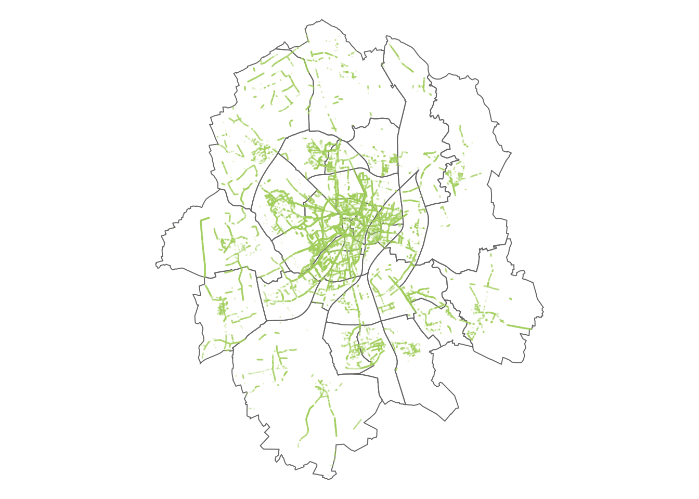
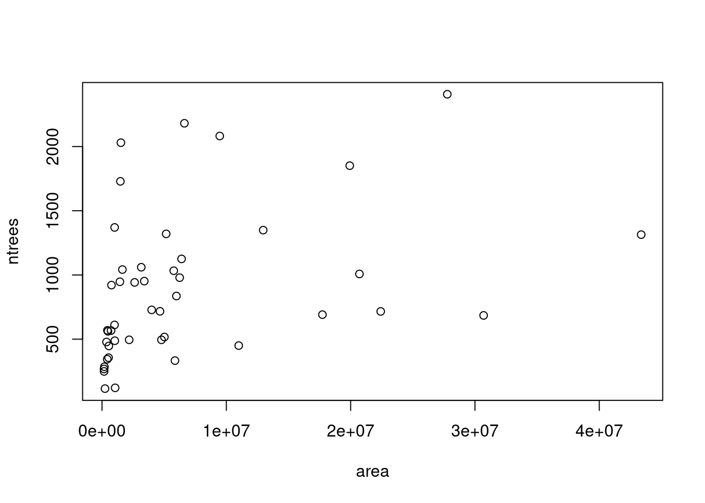
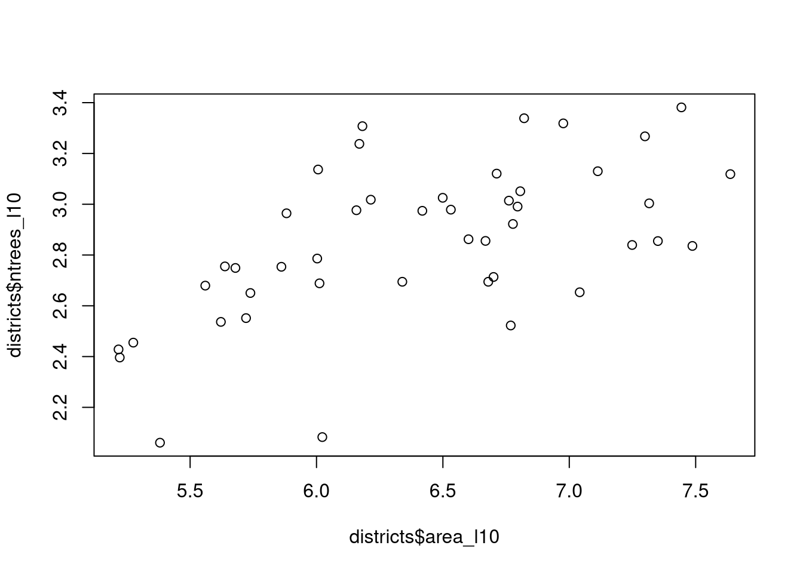
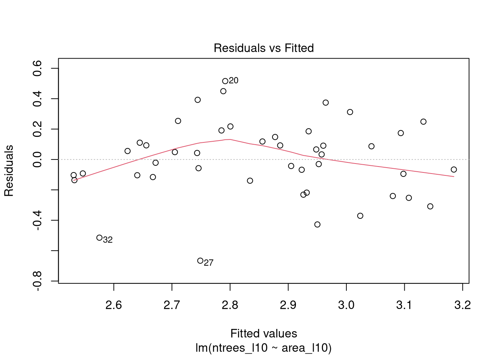
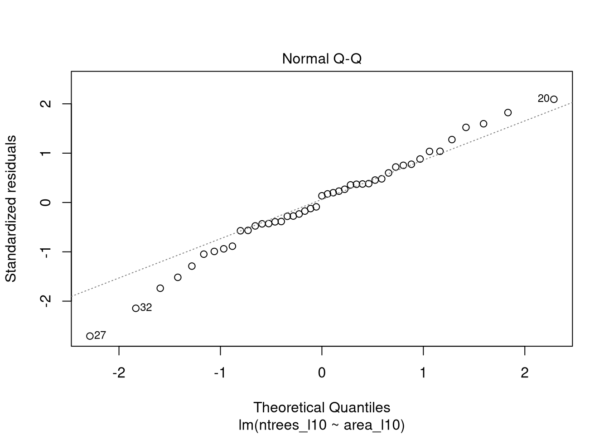
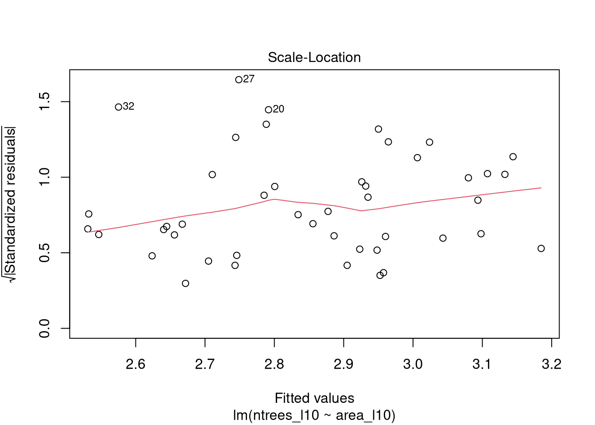
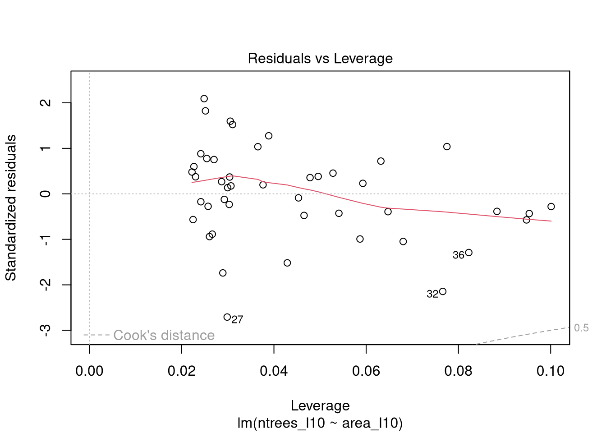
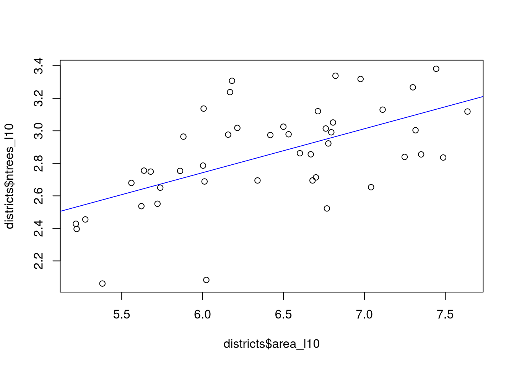
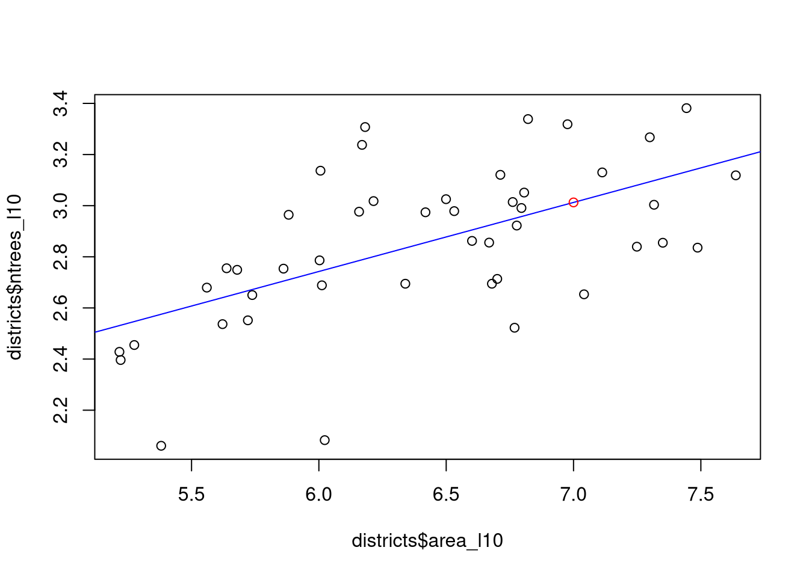

14 Urban Trees
In the open data portal Münster you can find the location and species group of all the trees that are managed by the city. From there, one can also find the district borders. To put into practice what we have learned for far, below are some tasks using both tree and district information. You can download the two datasets from the learnweb (slightly modified for the course).

Figure 14.1: Tree positions in Muenster
14.1 Tasks: Urban Tree Diversity
- Tree Abundances
- Load the datasets
muenster_baume.csvandmuenster_bezirke.csv. - Which district has the most trees?
- Modelling
- Compare the number of trees in a district with its area: Plot this relation.
- Is a linear model applicable here?
- Transform both variables into a logarithmic scale (
log()). Plot the relation again and compare. - Model the relation between district area and number of trees. Is the model valid?
- Tree species
- Which districts inhabit “endemic” species?
- Which district is the most diverse?
- Calculate the Shannon index for each district.
- For this we need a community matrix. Each Row is a District, Each Column a Species.
- Use the
diversity()function from theveganpackage on the community matrix.
Bonus: Geospatial Data
- Load or install the
sfpackage. - Look at the help page for
st_as_sf().- Which arguments do you need?
- Convert the trees from a
data.frameto asf pointsobject. What has changed? - Plot the trees.
14.2 Solution
Click for Answer
14.2.1 District with the most trees
# Load the packages.
# Load the datasets.
library(tidyverse)
trees = read.csv("data/muenster_trees.csv")
districts = read.csv("data/muenster_districts.csv")
head(trees)## species district X Y
## 1 Tilia Uppenberg 404685.2 5759126
## 2 Tilia Uppenberg 404698.5 5759130
## 3 Carpinus Uppenberg 404693.0 5759279
## 4 Carpinus Uppenberg 404692.9 5759289
## 5 Carpinus Uppenberg 404692.1 5759319
## 6 Tilia Uppenberg 404685.6 5759520head(districts)## id district district_group area
## 1 15 Bahnhof 2 Innenstadtring 363089.2
## 2 16 Albachten 5 Münster-West 12965147.7
## 3 17 Angelmodde 8 Münster-Südost 5016879.5
## 4 18 Kreuz 2 Innenstadtring 1014690.9
## 5 19 Berg Fidel 9 Münster-Hiltrup 4781065.8
## 6 20 Düesberg 3 Mitte-Süd 2185161.9## Which district has the most trees?
district_summary = trees %>% group_by(district) %>%
summarise(ntrees = length(district))
district_summary %>% filter(ntrees == max(ntrees))## # A tibble: 1 × 2
## district ntrees
## <chr> <int>
## 1 Nienberge 2407# or:
table(trees$district)##
## Aaseestadt Aegidii Albachten Amelsbüren Angelmodde
## 1729 268 1349 1314 517
## Bahnhof Berg Fidel Buddenturm Coerde Dom
## 478 495 285 333 569
## Düesberg Geist Gelmer-Dyckburg Gievenbeck Gremmendorf-Ost
## 495 947 691 2082 728
## Gremmendorf-West Hafen Handorf Hansaplatz Herz-Jesu
## 1125 121 685 344 488
## Hiltrup-Mitte Hiltrup-Ost Hiltrup-West Josef Kinderhaus-Ost
## 836 450 717 567 942
## Kinderhaus-West Kreuz Martini Mauritz-Mitte Mauritz-Ost
## 1320 1370 249 1042 1033
## Mauritz-West Mecklenbeck Neutor Nienberge Pluggendorf
## 561 979 356 2407 447
## Roxel Rumphorst Schlachthof Schloss Schützenhof
## 1851 1060 921 2030 611
## Sentrup Sprakel Überwasser Uppenberg Wolbeck
## 2181 716 115 952 100814.2.2 Modelling
# Compare the number of trees in a district with its area.
## We need a data.frame with the information from both csv files (area and ntrees)
## We use a join for that.
districts = left_join(districts, district_summary, by = "district")# Plot this relation
# Is a linear model applicable? -> No
plot(ntrees ~ area, data = districts)
# Log transformations
districts$area_l10 = log10(districts$area)
districts$ntrees_l10 = log10(districts$ntrees)
# After log transformation, a linear model is more feasible
plot(districts$area_l10, districts$ntrees_l10)
mod = lm(ntrees_l10 ~ area_l10, data = districts)
summary(mod)##
## Call:
## lm(formula = ntrees_l10 ~ area_l10, data = districts)
##
## Residuals:
## Min 1Q Median 3Q Max
## -0.66598 -0.11579 0.03334 0.14787 0.51588
##
## Coefficients:
## Estimate Std. Error t value Pr(>|t|)
## (Intercept) 1.12174 0.36513 3.072 0.00368 **
## area_l10 0.27014 0.05668 4.766 2.17e-05 ***
## ---
## Signif. codes: 0 '***' 0.001 '**' 0.01 '*' 0.05 '.' 0.1 ' ' 1
##
## Residual standard error: 0.2497 on 43 degrees of freedom
## Multiple R-squared: 0.3456, Adjusted R-squared: 0.3304
## F-statistic: 22.71 on 1 and 43 DF, p-value: 2.172e-05plot(mod)
plot(districts$area_l10, districts$ntrees_l10)
abline(mod, col = "blue")
new_area = data.frame(area_l10 = log10(10000000))
new_area$ntrees_l10 = predict(object = mod, newdata = new_area)
plot(districts$area_l10, districts$ntrees_l10)
abline(mod, col = "blue")
points(new_area$area_l10, new_area$ntrees_l10, col = "red")
new_area$ntrees_l10## [1] 3.012693# invert log10
10^new_area$ntrees_l10## [1] 1029.65814.2.3 Tree diversity
# Which districts inhabit "endemic" species?
## Count the unique districts per tree species,
## Where is this == 1?
endemic_species = trees %>% group_by(species) %>%
summarise(ndistricts = length(unique(district))) %>%
filter(ndistricts == 1)
trees %>% filter(species %in% endemic_species$species) %>%
pull(district) %>% unique()## [1] "Geist" "Mecklenbeck" "Gievenbeck" "Kreuz" "Bahnhof"
## [6] "Mauritz-West" "Schloss" "Aaseestadt"trees %>% filter(species %in% endemic_species$species)## species district X Y
## 1 Cladrastris Geist 404869.2 5754909
## 2 Catalpha Mecklenbeck 403531.2 5754678
## 3 Catalpha Mecklenbeck 403521.3 5754677
## 4 Catalpha Mecklenbeck 403541.1 5754679
## 5 Catalpha Mecklenbeck 403556.1 5754681
## 6 Mespilus Gievenbeck 401353.9 5758733
## 7 Sequoiadendron Kreuz 405850.2 5758408
## 8 Cryptomeria Bahnhof 405953.9 5757263
## 9 Davidia Kreuz 405724.5 5758508
## 10 Sambucus Mauritz-West 406870.7 5757471
## 11 Decaisnea Schloss 404395.1 5758201
## 12 Pseudotsuga Schloss 404655.8 5757664
## 13 Viburnum Aaseestadt 403632.5 5755626
## 14 Abies Aaseestadt 404304.0 5756153# Shannon Index
# install.packages("vegan")
library(vegan)
# Community Matrix
## Rows: districts
## Columns: species
cont = table(trees$district, trees$species)
vegan::diversity(cont)## Aaseestadt Aegidii Albachten Amelsbüren Angelmodde
## 2.694738 1.900178 1.521810 1.319029 2.103345
## Bahnhof Berg Fidel Buddenturm Coerde Dom
## 2.198826 1.842371 1.497039 1.913592 1.329042
## Düesberg Geist Gelmer-Dyckburg Gievenbeck Gremmendorf-Ost
## 2.266915 2.225178 1.554180 2.128873 2.126013
## Gremmendorf-West Hafen Handorf Hansaplatz Herz-Jesu
## 1.708149 1.780047 2.170564 2.469955 2.235766
## Hiltrup-Mitte Hiltrup-Ost Hiltrup-West Josef Kinderhaus-Ost
## 2.335542 2.327677 1.495869 2.348574 2.077545
## Kinderhaus-West Kreuz Martini Mauritz-Mitte Mauritz-Ost
## 2.177658 2.519458 1.692007 2.207160 2.497341
## Mauritz-West Mecklenbeck Neutor Nienberge Pluggendorf
## 2.479100 2.253076 1.969991 2.132541 2.758211
## Roxel Rumphorst Schlachthof Schloss Schützenhof
## 1.522840 2.161561 2.609566 2.401460 2.516116
## Sentrup Sprakel Überwasser Uppenberg Wolbeck
## 2.310912 1.942009 2.468009 2.247333 1.520262